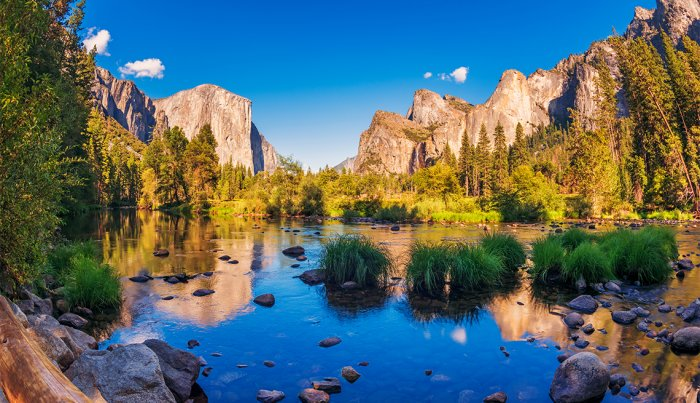

| Home | Sources | Quiz |
Title 54 of the United States Code, also known as "National Park Service and Related Programs," serves as the legal foundation for the operation and management of the National Park Service (NPS). Title 54 outlines the NPS's mission, authority, and responsibilities in conserving, preserving, and providing access to the nation's natural, cultural, and historic resources.
The primary objective of Title 54 is to ensure that these invaluable resources, including national parks, monuments, historic sites, and recreation areas, are protected and left unimpaired for the enjoyment of present and future generations. It provides the legal framework for the establishment, management, and preservation of these national treasures, as well as the promotion of outdoor recreation, education, and conservation initiatives across the United States.
Title 54 of the United States Code plays a pivotal role in preserving the nation's most treasured natural and historical landmarks. It allows the National Park Service to manage over 400 sites across the country, each of which tells a unique part of America's story. From the awe-inspiring natural beauty of Yellowstone and Yosemite National Parks to the historic significance of sites like Independence Hall, the NPS is entrusted with safeguarding these irreplaceable assets.
Title 54 doesn't just cover the protection of landscapes and monuments; it also ensures that these places remain accessible to the public. Whether you're seeking an outdoor adventure, a cultural experience, or a deeper understanding of America's history, Title 54 provides the legal framework for the NPS to offer these opportunities. So, whether you're exploring the Appalachian Trail, visiting the Lincoln Memorial, or discovering the mysteries of Mesa Verde, Title 54 is the backbone that ensures these experiences are not only available today but are conserved for the enjoyment of generations to come.
This title is divided into various sections, each addressing specific aspects of the NPS's responsibilities, mission, and the areas it manages. It outlines how these sites are established, maintained, and protected from activities that could harm their natural or historical integrity. It grants the NPS the authority to set regulations that maintain the well-being of the parks while still providing opportunities for the public to visit and enjoy them.
A key component of Title 54 is the promotion of education and interpretation. The NPS not only conserves these areas but also strives to educate the public about the natural and cultural resources they protect. This includes programs, visitor centers, and ranger-led tours designed to enrich the visitor experience and foster a deeper connection to the nation's heritage.
The NPS's mission goes beyond just protecting and preserving; it involves creating opportunities for outdoor recreation. Whether you're interested in hiking, camping, wildlife watching, or simply enjoying the beauty of the great outdoors, Title 54 ensures that these opportunities are available to all who seek them. It promotes healthy and active lifestyles while connecting people with the wonders of nature.